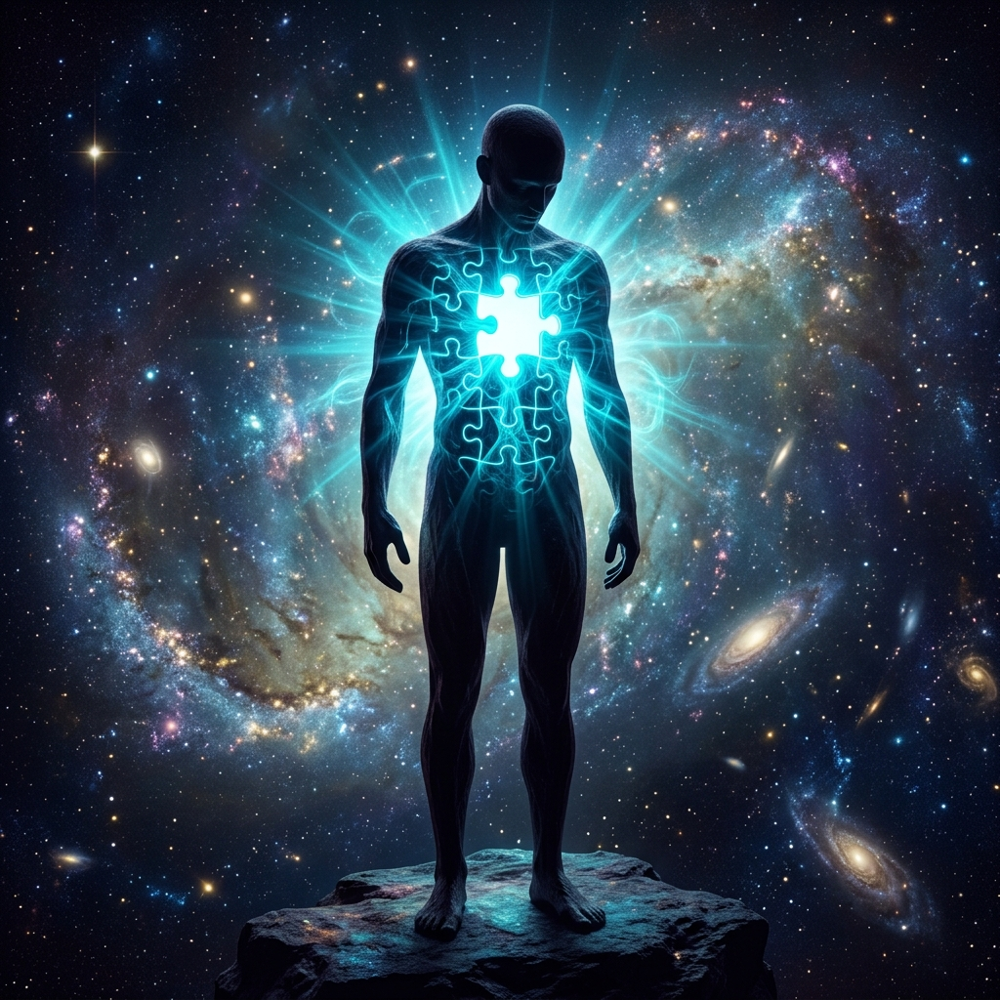

Three thinkers. Three angles on the same question: What does it mean to be fully human — and what happens when we get the answer wrong?
Text 1 — Charles Malik
Struggle, Care, and the Condition of Being Thrown
Who Was He?
Charles Malik (1906–1987)
Lebanese Christian philosopher and statesman. Principal drafter of the Universal Declaration of Human Rights (1948). President of the UN General Assembly (1958–59). From 1945 to 1959 — fourteen continuous years — he was Lebanon's chief representative to the United Nations, present from the founding gavel in San Francisco through the Cold War's most dangerous years.
Malik opens his essay not with politics or law — but with an ontological shock: we are thrown into this world of struggle and care. We didn't choose our world, our bodies, our era, or our condition. And yet, here we are, minds already full of problems and concerns, before we've even asked why.
- ›'Fated' to be Free: 'Fate' in Malik's sense has nothing to do with fatalism. Man is fated to be responsible — doomed to choose. Any appeal to kismet or external forces to escape a decision is, to Malik, utterly foreign to human reality.
- ›The anguish of decision: Every choice involves the 'ruthless destruction of possibilities.' To say yes to one path is to categorically close off all others — forever. That weight is inseparable from being human.
- ›Heidegger's insight, grounded differently: Malik acknowledges he's building on Heidegger's notion of 'Thrownness' (Geworfenheit) and 'Care' (Sorge) — but insists Heidegger was drawing on the Judeo-Christian tradition while refusing to admit it.
- ›The Psalms as ontology: Malik argues the Book of Psalms is the greatest fundamental ontological-existential work ever written — portraying every possible human mood and the struggle with the 'ground of existence' in a way no philosophy textbook can match.
Why Diplomats Smile
Malik spent fourteen years in the UN watching diplomats negotiate peace between nations. And he came to a strange, subversive conclusion:
"That is why most diplomats smile: it is not hypocrisy — it is a sort of metaphysical awareness of the human impossibility of their task."
The diplomat smiles not because they are cynical or dishonest — but because they understand, at some deep level, the fundamental absurdity of trying to create outer peace while inner peace remains unachieved. It is the smile of someone who sees the paradox: the blind leading the blind, the physician who cannot heal himself, trying to heal the world.
This insight leads Malik to his sharpest critique: before peace-making can work, the peacemaker must put his own spiritual house in order. A civilization that has cut itself off from its own spiritual roots — that is too proud or embarrassed to acknowledge its ground — cannot actually make or sustain peace. It can only perform it.
Existential Pride
Malik's term for the core modern failure: man 'proudly refuses to acknowledge his ground, his origin, his dependence.' While this radical pride dominates an entire culture, he asks, can anyone 'with a broken and contrite heart' really expect peace?
Augustine's Self-Love
Malik invokes Augustine: if self-love is the ultimate governing principle, peace achieved through diplomacy is always a patch job, not a cure. The deeper struggle — coming to terms with one's own nature — is perpetually postponed.
The UN's Limit
Malik was inside the UN for 14 years. His verdict: 'international peace and security' — the absence of armed conflict — is necessary but radically insufficient. It has nothing to say about whether the humans agreeing to coexist are themselves at peace with their own being.
"There is something at once necessary and noble, and false and sad, about the struggle for peace."
— Charles Malik
Text 2 — Martin Buber
I-You and I-It: The Two Worlds
Jewish philosopher Martin Buber argues that human experience is divided into two fundamentally different modes of relating — not just to people, but to everything.
| Dimension | I-You | I-It |
|---|---|---|
| How you relate | With your whole being; unmediated | Perceiving, sensing, using; partial |
| What you encounter | A real presence — the You | An object — classifiable, past |
| Time quality | Fulfilled present | Exists only in the past |
| Key element | Relation | Experience |
| What it produces | Love, responsibility | Information, utility |
- ›Beyond Human Relation: Buber explicitly notes that an I-You relationship isn't just for humans. We can encounter a tree, an animal, or nature itself as a 'You' if we approach it with our whole being instead of merely observing it as an object.
- ›The Eternal You: In every genuine 'You,' Buber argues, a person reaches toward the Eternal You — God, the ultimate transcendent presence that cannot be reduced to an 'It'.
- ›Love is not a feeling: 'Feelings dwell in man; man dwells in his love.' Love is the responsibility of an I for a You — a cosmic force.
- ›The danger of objectification: A world lived entirely in 'I-It' mode treats everything — including people — as objects to be used and discarded.
The Crisis of Modernity
Our digital, transactional world aggressively pushes us toward I-It relations. Buber's insight: whenever you treat a person as a means to your end, you lose a piece of your own humanity.

The Missing Chest: The connection between intellect and sentiment.
Text 3 — C.S. Lewis
Men Without Chests
C.S. Lewis opens The Abolition of Man (1943) by analyzing a school textbook that seems harmless — but is quietly teaching students that no value judgment is ever really about the world. It's only ever about your feelings.
The Waterfall
A textbook claims that calling a waterfall "sublime" only means "I have sublime feelings."
The Result: All values become mere autobiography. Nothing is objectively beautiful.
The Ocean Cruise
A textbook mocks an ad for a cruise to inoculate the student against feeling awe for the ocean itself.
The Result: It creates the "Trousered Ape" — a person who can only see the Atlantic as "millions of tons of cold salt water."
The Willing Horse
A text mocks a passage praising horses as the "willing servants" of early colonists, wiping out prehistoric piety.
The Result: Man's noble relationship with nature is severed, replaced by cold utility.
Lewis's counter: This is a fatal philosophical mistake. If every moral or aesthetic statement is only autobiography, then nothing is objectively beautiful, good, or worthy of defense. And if nothing is worth defending, you cannot build — or protect — a civilization.
Lewis calls this teaching approach 'irrigating deserts' — not cutting down jungles. The student isn't being freed from superstition; they're being starved of the moral imagination that makes human flourishing possible.
The Head
Pure reason. Calculates means, but cannot choose ends. Knows how, not why something matters.
The Chest
Trained sentiment — the moral imagination. Recognizes beauty, courage, and justice as real features of the world, not just preferences.
The Belly
Raw appetite. Grows to fill any vacuum left when the chest is absent. Cannot be reasoned with.
"We make men without chests and expect of them virtue and enterprise. We laugh at honour and are shocked to find traitors in our midst."
— C.S. Lewis, The Abolition of Man
The Tao
Lewis called the shared moral tradition of all humanity 'the Tao' — the cross-cultural intuition that cruelty is wrong, courage matters, loyalty binds. Destroy it and you have nothing left — not even a reason to be free.